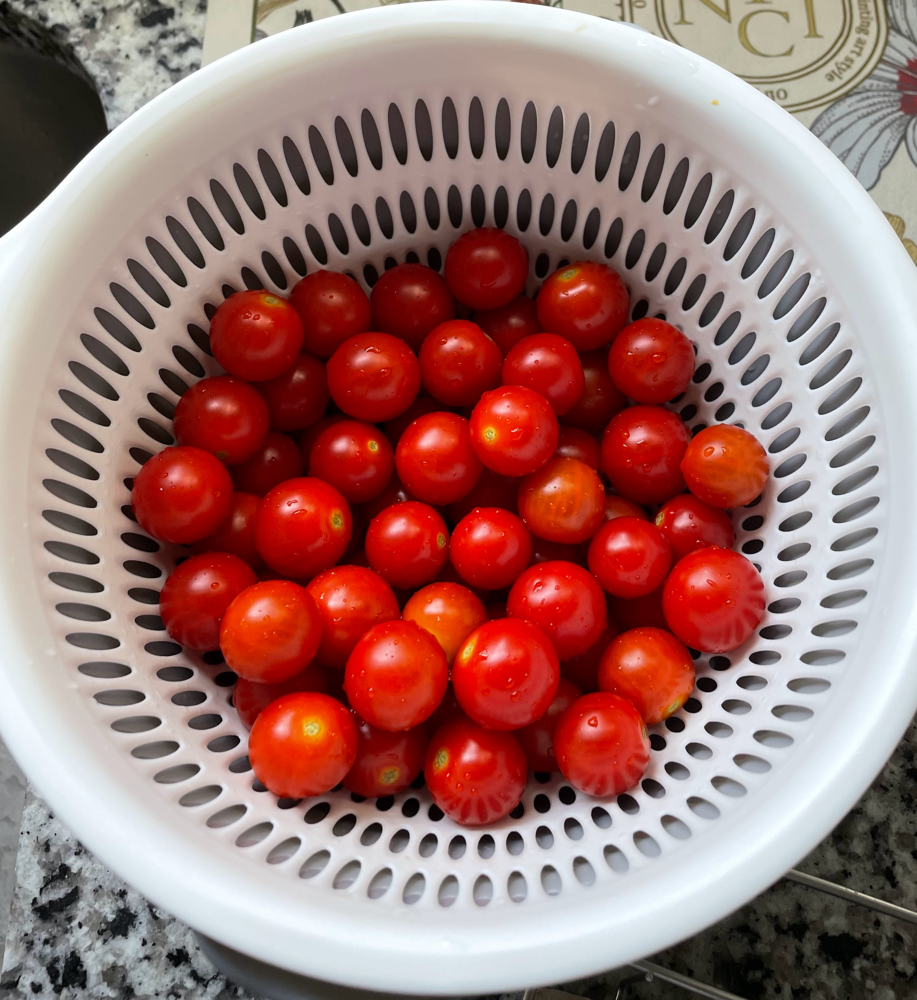
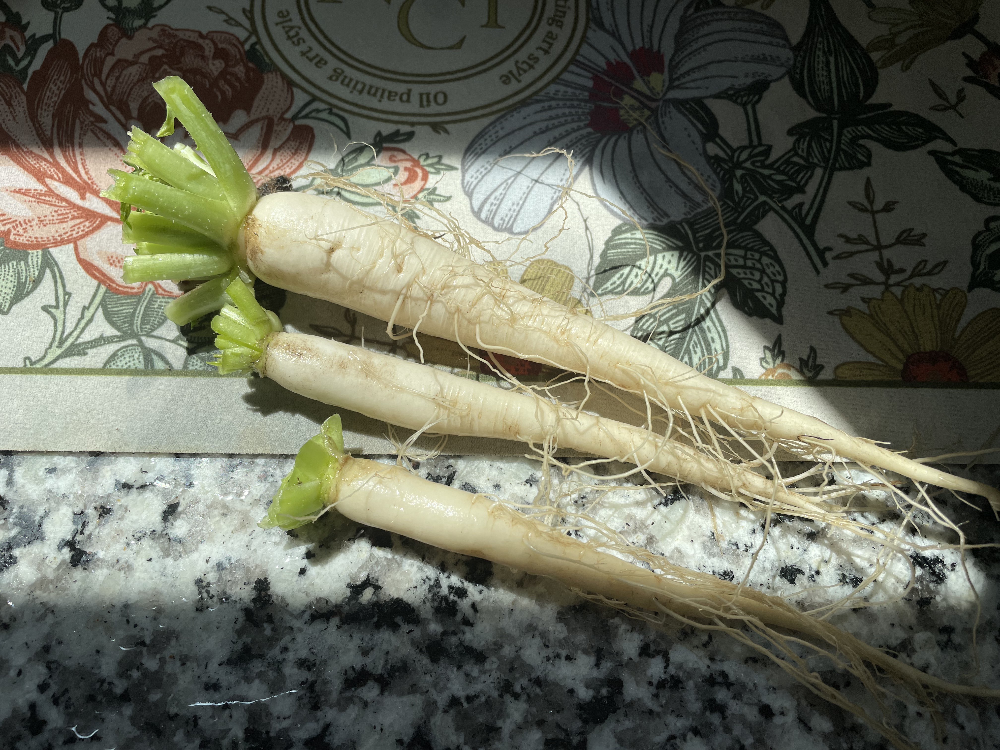
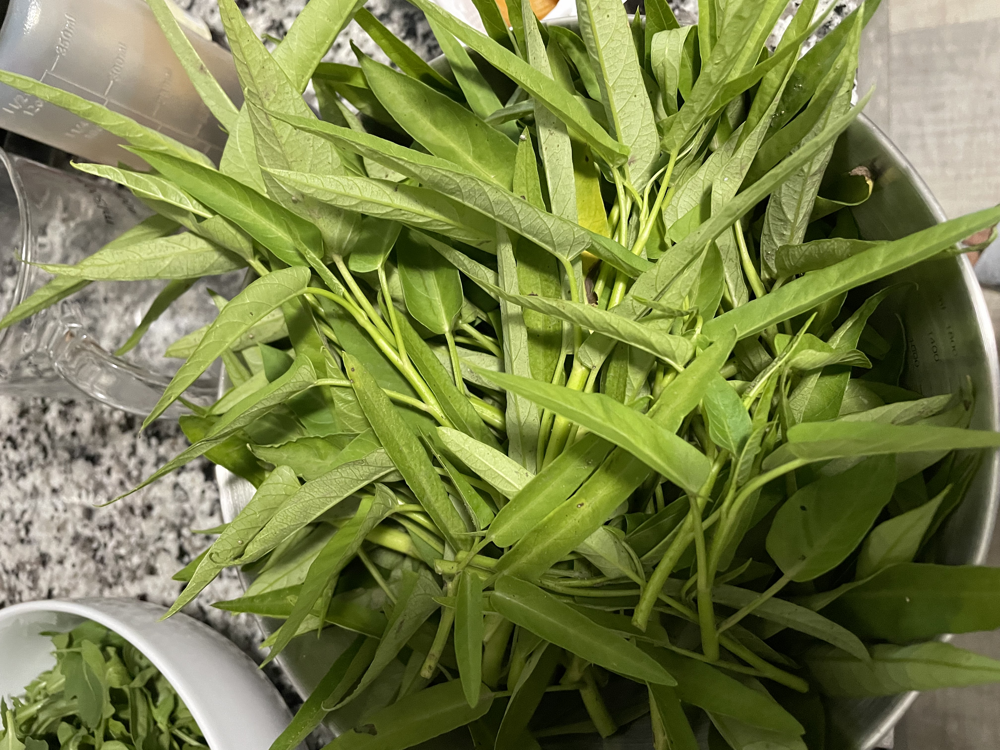
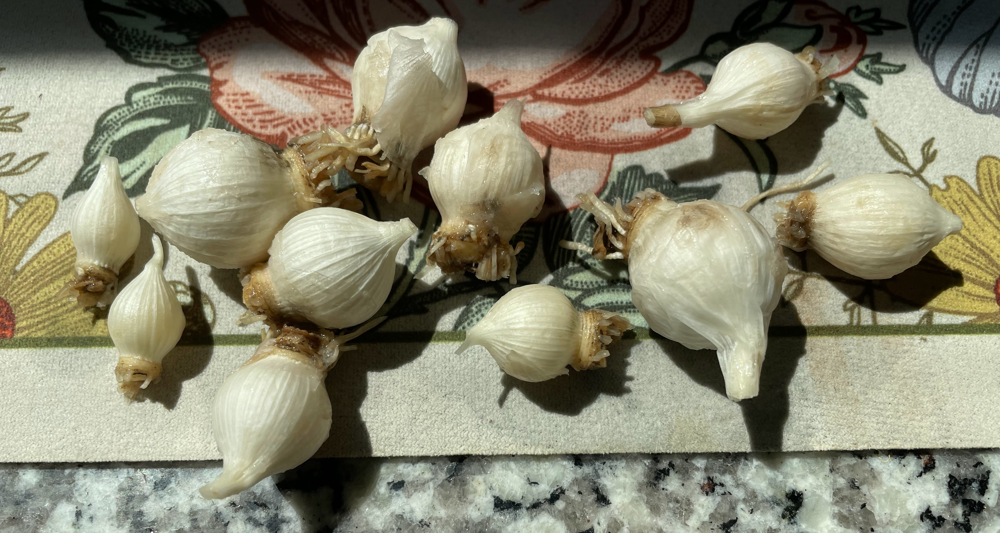
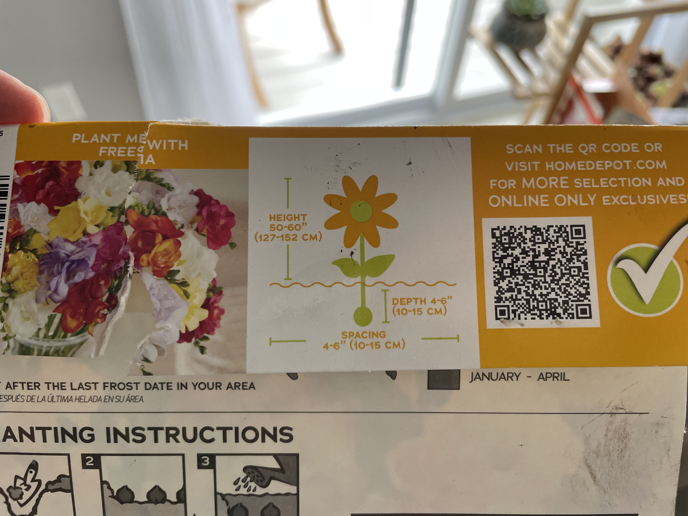
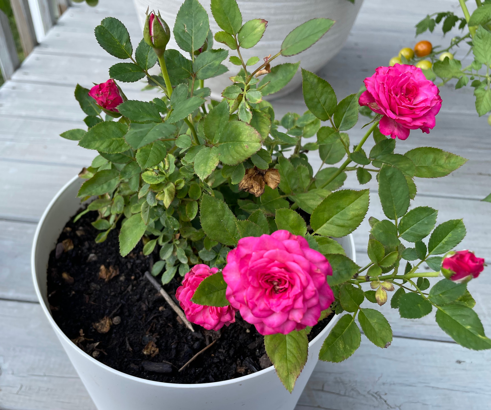
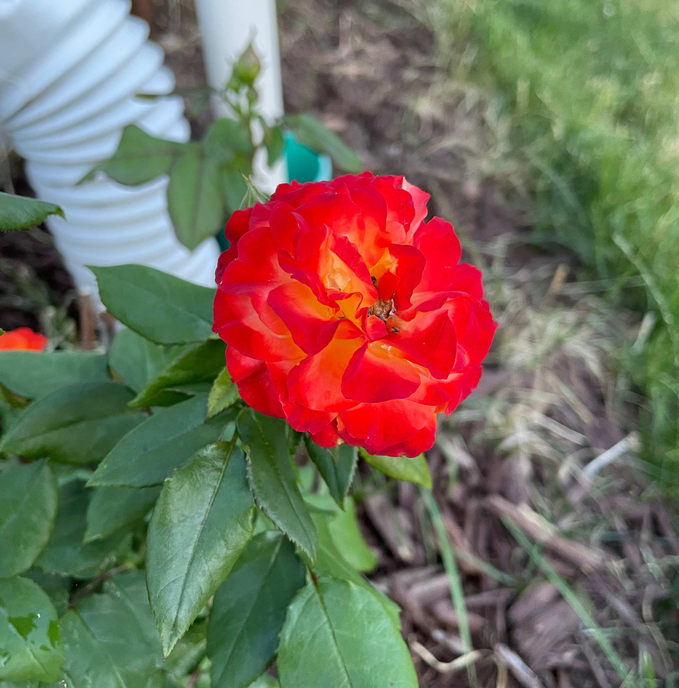
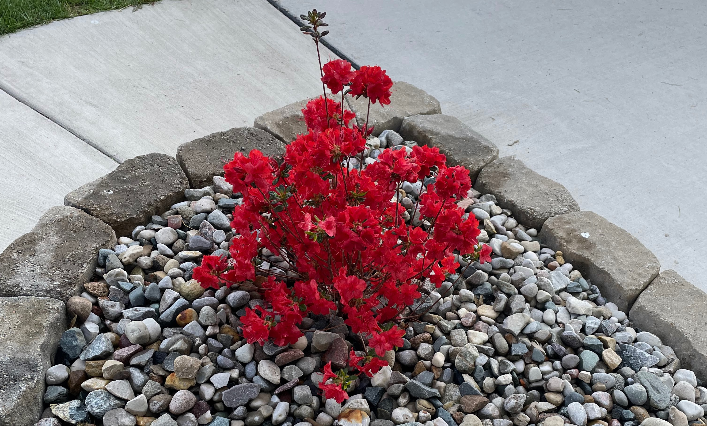
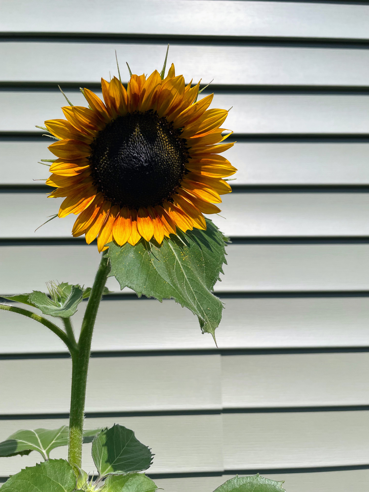

种植笔记2025
记录一下过去一年种的花和植物。 这一年干了很多农活：把楼下的花园给开垦出来了；在房屋的侧面和前面种植了一圈植物；在门口的石子地面上也种了一些东西；买了好几个花盆放在阳台上。
蔬菜
今年试着种的蔬菜还挺多的，很大一部分是Y给我们的种子。空心菜，大白菜，小白菜，萝卜，上海青，奶油生菜和西红柿都试了一下。
西红柿是蔬菜还是水果
今年准备Structure of Programming Languages课程的时候，书上用蔬菜还是水果类比Compiler和Interpreter还挺好理解的。蔬菜是一个食物的概念，水果（fruit，或许说果实更恰当）是一个植物学的概念。所以西红柿从植物学上来说肯定是果实，但是作为食物的时候肯定也是蔬菜。所以西红柿既是蔬菜也是水果。就好像CPython既有compiler又是interpreter。好了也许这个并不重要。重要的是西红柿和其他蔬菜的种植体验真的很不一样。
西红柿是果实，所以需要等它开花结果之后才能收获。我大概是四月份在家里育苗然后七月份开始收获的。育苗是吃力不讨好的事情，下次不做了。西红柿唯一不成功的地方是没有种在花园里面。虽然拿了一个最大的花盆，但是相比于送给Y的小苗，我长出来的西红柿还是要小很多。而且皮要厚很多，大概率是花盆里面营养不足的原因。西红柿还需要主义它是否开裂，我今年总结的规律似乎是如果浇水不规律的话西红柿就比较容易开裂。
蔬菜种植体验
萝卜，小白菜和生菜我是在初春的时候种植下去的。不过GPT说萝卜在秋天的生长期更长，根部膨大会更好。字体来说这三种菜都不是特别成功。
萝卜和小白菜一开始在阳台上用花盆种植，初期生长还是挺快的，但是如果花盆太小的话很容易就会限制生长。后来实验发现至少需要10’(25.4 cm)以上的花盆才能有足够的空间让他们长大。后来因为花盆的限制，移栽了一部分去楼下的花园。但是花园的虫害又是一个大问题。一段时间之后叶子都被菜青虫吃的差不多了……试图用大蒜和辣椒水驱虫但是效果并不是很好。可能最好的还是物理驱虫（指用手摘掉）。
小白菜的问题一直是收获的菜口感不好，比较老。可能是水分和肥料的问题。后来天气热了小白菜和萝卜都要抽薹了就没有让他们继续生长。抽薹之后据说叶片会更老一点，萝卜也会空心。
萝卜的主要问题是不膨大。我猜也是肥料不够的原因，再加上春季萝卜的生长时间太短了。收获的萝卜只有手指头粗细。据说萝卜缨也是可以吃的，我收获之后拿来炒鸡蛋了。怎么说呢，可以吃但是没有必要，苦味很明显。
奶油生菜的问题更神奇一点。可能是温度的原因，我的奶油生菜的苦味很重，快要能赶得上苦菊的味道了。也是因为这个原因我才知道生菜也是菊科植物。壮哉我大菊科。哦对了，生菜萝卜和白菜都是天天被虫吃的十字花科弱鸡。
八月份气温转凉之后我尝试重新种了一下上海青，但是问题是一样的，口感很老而且生虫。这回没有花盆大小的问题了。问题只能出现在肥料和水分上。
空心菜是种植体验很不一样的叶用蔬菜。GPT说空心菜的种植需要的空间比较少，水分和阳光多，于是我就在花园里面密植了。空心菜虽然不像十字花科植物那样生虫，但是也有其他pest问题（我才知道pest既可以指害虫也可以指害兽）。说的就是你兔子。夏天生长的空心菜基本上都被吃完了，入秋之后同样的植株我收获了一点。用网把花园围起来确实能显著防止兔子啃空心菜。
香料
香料是今年种的植物里面相对来说比较成功的。有去年买的百里香和今年买的牛至叶和细香葱。这些香料都是喜欢阳光的植物，所以种在了花园阳光最充足的地方。需要打理的时间很少，不长虫害也不用施肥。可能唯一需要注意的就是不能长太快会侵占其他植物的资源。如果人类能只吃香料的话估计世界上就不会饥荒了。
还尝试种了一点小葱和大蒜。大蒜是超市买的品种然后种在了花盆里面。完全没有打理所以最后收获的大蒜籽特别的小，有趣的是小的大蒜都是独头的，收获之后就直接做饭用掉了。打算今年秋天的时候，收获剑兰的种球之后再去种植一些大蒜。这次网购了可以越冬的品种，希望能够吃上蒜苔和大蒜。小葱没有什么好多说的，不需要打理，没有害虫害兽，还可以一直收获，香料都很棒。
花
今年种的花的种类很多，大部分是新购买的，但是也有一些去年留下来的花。
剑兰
今年最先买的植物就是剑兰的种球， 当时还没有对种花做那么多的研究，因为Q喜欢就买了一大袋的打折种球。后来发现剑兰其实是比较麻烦的植物， 不能在我家密歇根这边越冬，所以冬天之前得从地里面挖出来。
最开始四月份的时候我们想在小花盆里面让它发芽，然后再移栽到楼下的花园里面。后来发现如果不是想让它早一点开花的花其实没有这个必要。这个是我们买的多色剑兰的包装袋：
一开始Q种的时候没有分清楚种球的正面和反面，尖尖的一面需要朝上种植。我知道之后去挖出来调整了，所以也没有实验如果种反过来不调整会发生些什么。还有就是要种植到规定的深度，一开始Q种植的深度不够再加上后来安装喷水系统的原因，我们很多剑兰在开花之后倒伏了。
其实之后需要的打理就很少了，但是需要等三个月左右剑兰才能开花。这个混合种球的花色还挺多的有红色，深红色，紫色，粉红色和绿色。红色是最多的。Q和我都觉得粉红色最好看。开花完成之后要等到地面部分全部枯萎之后再把种球重新挖出来然后储藏过冬。
最后放几张我们觉得最好看的图片吧。
Mini Rose
Mini Rose我本来想说是小玫瑰的，但是看花朵的形状。他可能更加像是月季一点。但是Q和我都叫它小玫瑰。小玫瑰是去年再Trader Joes购买的。他本来的花盆很小，去年开花之后就一直放在室内过冬。因为很温暖的原因整个冬天都没有完全枯萎和掉叶子。GPT说这样其实对他来年开花不是很好。今年春天的时候我把花盆换到了一个至少有30cm的大盆里面。之后小玫瑰逐渐长成中玫瑰了。而且开花了好几茬。花色会慢慢从红色变成紫色。这个是小玫瑰八月四日的样子。
我们今年还在Aldi买了更大号的玫瑰种在的房屋的西北角，大玫瑰是香槟色的，种植非常成功它一直长得很好也在开花。刚刚种植下去的时候有一些虫害问题，可能是金龟子在啃玫瑰的嫩叶。过了盛夏之后虫害的问题渐渐就没有了，不知道是订购了pest control服务的原因还是气温的原因。但是花朵的虫害的影响很少。被啃掉嫩叶也不怎么影响它开花。
玉簪
玉簪是Y给我们的，他们家门口的玉簪长势太好了，我们挖了一部分移栽到我们家，因为玉簪是相对喜欢半阴的植物。所以我们主要种在了向北的家门口，另外一部分种在了花园下方被楼梯阻挡的部分。能够开出蓝紫色的小花，叶子也是挺好看的。顺带一提，Y今年还给了我们一株金边黄杨，我一开始种在了花园里面后来移栽到了房屋西面。但是它一直都没有长大，观察一下明年它会不会再长出新的叶子。
杜鹃花
杜鹃花是今年我们买的第一株植物。GPT说（以后可以用据说代替GPT了，都是JU字辈的）杜鹃比较喜欢阴处而且需要的水分很少我就种在了家门口北面的石子地上。是鲜红色的小花还是很好看的。多年生的植物希望明年也能看到它开花。
绣球
Costco的绣球花便宜有大碗，一大盆里面有三株绣球。一株种在了后院，另外两株种在了门口的石子地中。绣球也是喜欢半阳到半阴的植物。所以特地选了阳光不是特别强烈的地方。但是绣球的花期似乎很短。开花之后很快就褪色了。而且无论是在后院还是门前的绣球，似乎都遇到了叶子枯萎的问题。不知道是阳光太强烈还是有什么传染病。据说绣球需要在花开败之后就进行修剪，这样不会剪到新的嫩芽导致来年不开花。但是也有说法是新品种的大花绣球没有这个问题。无论如何，喜欢她们明年可以开的更好。

薰衣草，松果菊和宿根天人菊
这三种花种在在房屋西边，都是喜欢阳光的花朵。薰衣草买的比较早，而且听说比较耐旱，但是今年的开花情况感觉一直不是特别好。这三种都是多年生的植物，希望明年能看到她们在房屋西边继续开花。
向日葵
我原本是对向日葵没有什么特殊的感觉的，Q很喜欢向日葵而且快要出生的宝宝名字也是小葵。感觉今年种的向日葵特别有意义。向日葵很好养活不太用打理，耐旱耐贫瘠，而且在花盆和在土地里面都长得很好。当然，土地里面似乎长得更好一点。不同颜色的向日葵的植株大小差别很大，黄色的向日葵能长到2.5m的高度，红色的只有不到2m。但是不知道这个区别是不是真的是颜色导致的，还是土壤条件不一样。我们买的是多花头的品种，花期很长能够一直开花，现在密歇根的10/17依然有新的花朵开放。给大家看看我们美丽的小葵。
草坪，杂草，小鸟和其他一些东西
因为杂草的问题，今年在草坪上花了不少钱和时间。先是装了喷水系统，然后补种了草籽还撒了农药。机器真的是伟大，如果像以前用手动耙子处理草坪，累死咱都没把草坪打理的好看。所以得鸣谢一下Y借给我的机械们。夏天一个有意思的发现是一种常见的杂草居然是我以前很喜欢吃的马齿苋，在马齿苋还能细嫩的时候摘下来，焯水之后用辣椒和大蒜凉拌简直太好吃了。
四五月份的时候后院的楼梯下面来了两窝小鸟，其中一窝是house finch，另外一窝应该是robin。心血来潮给他们拍了特写，还找到了她们小鸟出生之后落下来的蓝色鸟蛋。
今年还装了喂鸟器，刚刚翻相册有一种黑头红胸的鸟的视频还挺好看的。叫做Rose-breasted Grosbeak。喂鸟器的向日葵种子还有黄米种子落在草坪上长出了好多杂草，可能那片土地也有小鸟的粪便所以特别肥沃吧。
夏天还把多肉肉们挪出了室外。在室外长得很好，除了下雨的时候会有点危险之外…
就写到这里吧，记录一下今年的农活，明年希望院子更好看。